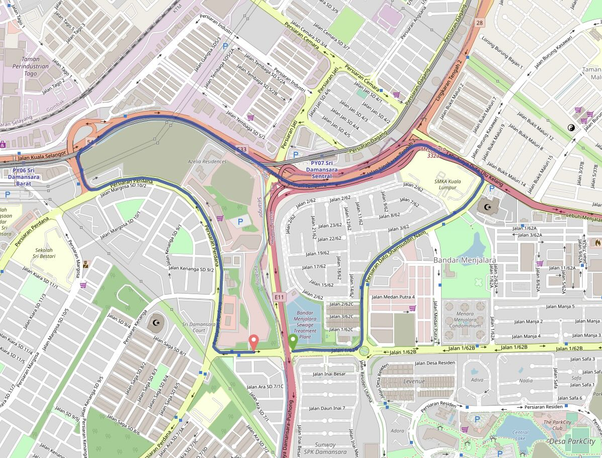

KL METROSCAPE
Some thoughts on urban planning in KL
Last updated: March 1, 2023
Islandification
Subheading
Example
add more

A short walk often has to be replaced by a long car journey in KL - Source:
Graphhopper Maps